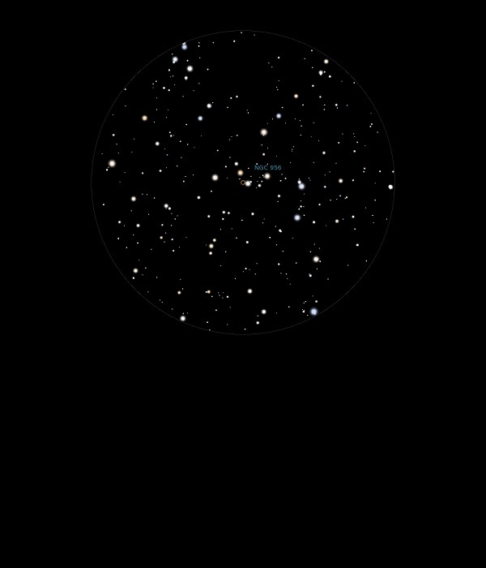

NGC 956

Open Cluster in Andromeda
NGC 956
Mag 8.9
10/12/14
A rather sparse and faint Open Cluster which itself sits in a rich starfield with a very neat asterism of 8th Mag stars in a ragged line above